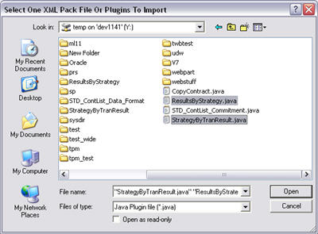
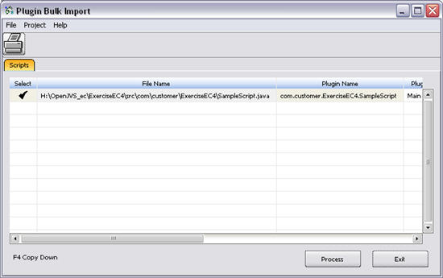
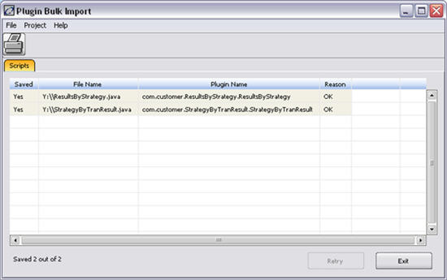

This window displays after file selection from the XML Pack file or Plugins to Import window.
Note: This page is for V82r1 and later. For V81r2 and earlier, see AVS Script Bulk Import.
This window can be accessed via multiple paths in the system. Listed below are two options:
1. Select the System Administration tab from Admin Manager.
2. Select the Plugin Bulk Import icon.
or
1. Open the Trading Manager.
2. Select Script à Script Editor. The Script Editor window displays.
3. Select File à Bulk Import.
A dialog will display. Select Files to import.

Once files have been opened and before being processed, the following screen displays:

The following screen displays after a plug-ins/scripts have been processed.

This window contains the following menu items:
Menu |
Item |
Description |
File |
Prints the current window. |
|
|
Exit |
Exits from the Plugin Bulk Import window and returns to the parent window. |
Project |
Start Project Manager |
Opens the Plugin Project Manager window. |
Help |
Show Error |
Opens the Java plug-in Compile Error window. |
Help |
Displays information about this window. |
This window contains the following buttons:
Button |
Description |
Performs the same function as Tools à Print plugin/script. |
|
Tells the system to proceed with the import. |
|
This field only appears after the import. If pressed, the screen will close. |
This window contains the following fields:
Field |
Description |
||||||||||||
Select |
Indicates that plugin/script listed should be processed. |
||||||||||||
File Name |
File name and path of the .java file to be imported. |
||||||||||||
Plugin/Script Name |
Plugin/Script Name in the OLF system. |
||||||||||||
Plugin/Script Type |
Indicates the type of plugin/script. There are five different types:
|
||||||||||||
Already Exist |
Yes indicates the plugin/scripts has been previously imported. |
||||||||||||
Overwrite? |
Yes indicates that the existing plugin/scripts should be overwritten. |
||||||||||||
Save On Comp Error |
This appears before the plugin/scripts have been imported. The default of No is the only option as a plugin/script with compile errors will not be saved. |
||||||||||||
Properties |
Displays parameters associated with the plugin/script (i.e. UserParm – Read+Write+Execute). |
||||||||||||
Categories |
Category of the plugin/script. Right click for a pick list of Categories. |
||||||||||||
Saved |
This appears only if the plugin/script has been saved. |
||||||||||||
Reason |
Displays OK if the plugin/script was imported successfully or displays a reason why it was not imported. |